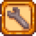

Opciones
| Guía de Inicio |
El Jugador | Opciones | Controles | Controles Móviles |
Salud | Energía | Habilidades | Ciclo Diario |
Hay dos lugares para establecer Opciones en Stardew Valley:
|  | Al crear una nueva partida, haz clic en el botón de la llave inglesa situado en la parte inferior izquierda de la pantalla de creación de un nuevo personaje para elegir "Opciones avanzadas". |
| Abre el menú del juego y elige la pestaña de "Opciones". |
Opciones Avanzadas
Opciones de juego avanzadas
- Paquetes del Centro Comunitario: Normal/Mezclado
- Modifica los lotes que aparecen en el Centro Cívico
- Recompensas de la mina: Normal/Mezclado
- Modifica las recompensas que aparecen en Las minas
- Finalizable en 1 año garantizado: (casilla de verificación)
- Garantiza que el Comerciante Ambulante venda una Semilla de Lombarda al menos una vez durante el primer año.
- Los monstruos pueden aparecer en la granja: (casilla de verificación)
- Permite a los monstruos aparecer en la granja por la noche
- Ganancias: Normal/75%/50%/25%
- Un multiplicador aplicado al precio de los artículos vendidos.
- Un multiplicador aplicado al precio de las semillas.
Opciones de Multijugador
- Cabañas iniciales: Ninguna/1/2/3/4/5/6/7
- El número de las cabañas iniciales.
- Distribución: Cerca/Separadas
- Si las cabañas están más cerca o más lejos unas de otras.
Otras opciones
- Semilla aleatoria (Casilla de texto)
- La semilla utilizada para aleatorizar el mundo del juego.
Opciones dentro del juego
General
- Correr siempre — Si se activa, el jugador correrá automáticamente. La tecla para correr puede ser apretada para realizar lo opuesto. Activada por defecto.
- Mostrar retratos — Si se activa, mostrará el retrato y nombre cuando se interactúa con normalidad (excluye diálogos que tengan varias opciones). Si se muestran, el retrato aparece a la derecha del diálogo con el nombre debajo. De lo contrario, el nombre precede al mensaje, por ejemplo, <Nombre>: <Mensaje>. Activada por defecto.
- Mostrar retratos de vendedores — Si se activa, mostrará el retrato cuando interactúes con el comerciante. La visibilidad y posicionamiento son similares a la opción "Mostrar retratos". Activada por defecto.
- Mostrar dónde golpea la herramienta — Si se activa, mostrará un borde rojo alrededor de las casillas que serán afectadas por una herramienta. Activada por defecto.
- No mostrar golpe de herram. en movimiento — Si se activa, mostrará el borde rojo mientras caminas. La visibilidad del borde dependerá si la opción "Mostrar dónde golpea la herramienta" está activada. Activada por defecto.
- Modo Gamepad — Alterna el Modo Gamepad si usas Xbox Series X/S, PS5, Switch y otros mandos. Las opciones desplegables son: Detección automática; Activado; Desactivado. Desactivado por defecto.
- Modo de disparo del tirachinas — Cambia el modo del tirachinas, apunta a la posición del cursor y se dispara manteniendo pulsado y soltando. Las opciones desplegables son: Mantener y soltar; Arrastrar en la dirección opuesta. Mantener y soltar por defecto.
- Colocar Objetos — Las opciones desplegables son: Activado; Solo con mando; Desactivado. Solo con mando por defecto, requiere un teclado y/o controlador.
- Indicador de casilla posición. del mando — Activada por defecto, requiere un controlador.
- Pausar cuando la ventana está inactiva — Alterna si el juego se detendrá cuando la ventana de juego no esté activa. Todos los sonidos y las animaciones específicas (por ejemplo, el botón del diario) seguirán reproduciéndose. Activada por defecto.
- Usar menús estilo mando — El cursor se desplaza a los menús. Incluso sin un mando conectado, esto hará que el cursor se sitúe en la parte superior izquierda del inventario cuando se utilice la caja de envío. No activada por defecto
- Mostrar información avanzada de creación — Activa para mostrar más información en los menús de elaboración y cocción (incluyendo el número de veces que se ha elaborado/cocinado y el número de cada ingrediente disponible). No activada por defecto
Sonido
- Volumen de la música — Botón deslizable para controlar el volumen de la música. Por defecto: 75%
- Volumen de los efectos — Botón deslizable para controlar el volumen de los efectos. Por defecto: 100%
- Volumen del ambiente — Botón deslizable para controlar el volumen del ambiente. Por defecto: 75%
- Volumen de las pisadas — Botón deslizable para controlar el volumen de las pisadas. Por defecto: 90%
- Sonido de los peces al picar — Según las opciones que elijas, se reproducirán distintos sonidos de los peces cuando estés pescando. Las opciones desplegables son: Por defecto; 1, 2, 3, 4. Sonido de peces por defecto.
- Sonido de tecleo de diálogos — Si se activa, se podrá escuchar el sonido de tipeo de los diálogos. El volumen es afectado por el "Volumen de los efectos". Activada por defecto.
- Silenciar sonidos de los animales — Al habilitar esta opción, los animales no emitiran sonidos al estar en el exterior, o al ser interactuados por el jugador.
Gráficos
- Tipo de ventana — Las opciones desplegables son: Ventana; Pantalla completa; Ventana sin borde. Ventana sin borde está por defecto.
- Resolución — Ajusta la resolución de la pantalla completa, las opciones desplegables dependen del modo de visualización soportado por tu adaptador gráfico por defecto. Desactivado si no está en pantalla completa.
- VSync — Permite sincronizar la velocidad de fotogramas del juego con la tasa de refresco del monitor para mejorar la estabilidad. Desactivar VSync puede mejorar la velocidad de fotogramas en general a expensas de la estabilidad de la velocidad de fotogramas. Por defecto
- Fondos de menús — Si se activa, el fondo de pantalla del menú de juego mostrará una imagen estática de la estación actual. Desactivada por defecto.
- Bloquear barra de herramientas — Actívala si la barra de herramientas se mueve arriba o abajo de la pantalla cuando el jugador esté cerca al borde de cualquier mapa. Si está activada, la barra pierde opacidad.
- Nivel de zoom — Disminuye o aumenta el nivel de zoom en incrementos de 5%. Por defecto: 100%, Mínimo: 75%, Máximo: 125%.
- Botones de zoom — Cambia si los botones de nivel de zoom aparecen debajo de la visualización del día/hora en la parte superior derecha de la pantalla.
- Calidad de iluminación — Las opciones disponibles son: Baja; Media; Alta. Por defecto: Media
- Transparencia de la nieve — Botón deslizable. Por defecto: 0%. Deslízalo hacia la izquierda para aumentar la transparencia de la nieve.
- Mostrar efecto de flash — Si se activa, los efectos (como el relámpago) son visibles. Activada por defecto.
- Usar cursor del hardware — Si se activa, se cambiará el cursor del juego por el cursor que utilizas en tu sistema operativo (normalmente es la flecha blanca), incluso si está sobre puertas o NPCs. Desactivado por defecto.
Controles
Stardew Valley ofrece compatibilidad con el controlador con la funcionalidad Rumble.
- Vibración del mando — Activada por defecto, inactiva sin un controlador (joystick)
- Invertir desplazamiento de barra — Si se activa, mover la rueda hacia abajo escogerá el artículo hacia la izquierda y viceversa. Desactivada por defecto.
- Controles por defecto — Reinicia todas las teclas asignadas a sus valores por defecto. No pregunta por confirmación.
- Revisar/Realizar acción — Asigna una tecla para revisar objetos o para algunas acciones como: Interactuar con NPCs, calendario, necesito ayuda, puertas, escaleras y elevadores; elegir un objeto de tu inventario; recoger un recolectable o botín. Por defecto: Clic derecho, X
- Usar herramienta — Asigna una tecla para usar herramientas, o recoger recolectables y botín. Por defecto: Clic izquierda, C
- Acceder al menú — Asigna una tecla para abrir o cerrar el menú (siempre abre primero la pestaña de inventario). Por defecto: Escape, E
- Acceder al diario — Asigna una tecla para abrir o cerrar el diario. Por defecto: F
- Acceder al mapa — Asigna una tecla para abrir o cerrar el mapa. Por defecto: M
- Ir arriba — Asigna una tecla para mover al personaje hacia arriba. Por defecto: W
- Ir a la izquierda — Asigna una tecla para mover al personaje hacia la izquierda. Por defecto: A
- Ir abajo — Asigna una tecla para mover al personaje hacia abajo. Por defecto: S
- Ir a la derecha — Asigna una tecla para mover al personaje hacia la derecha. Por defecto: D
- Chat — Asigna una tecla para alternar el cuadro de chat. Por defecto: Interrogante, T
- Correr — Asigna la tecla para correr (Si "Correr siempre" está desactivado) mientras la tengas apretada. Por defecto: ShiftDerecho.
- Ranura de inventario #1 — Asigna una tecla para seleccionar la ranura #1 de la barra e inventario. Por defecto: 1
- Ranura de inventario #2 — Asigna una tecla para seleccionar la ranura #2 de la barra e inventario. Por defecto: 2
- Ranura de inventario #3 — Asigna una tecla para seleccionar la ranura #3 de la barra e inventario. Por defecto: 3
- Ranura de inventario #4 — Asigna una tecla para seleccionar la ranura #4 de la barra e inventario. Por defecto: 4
- Ranura de inventario #5 — Asigna una tecla para seleccionar la ranura #5 de la barra e inventario. Por defecto:5
- Ranura de inventario #6 — Asigna una tecla para seleccionar la ranura #6 de la barra e inventario. Por defecto: 6
- Ranura de inventario #7 — Asigna una tecla para seleccionar la ranura #7 de la barra e inventario. Por defecto:7
- Ranura de inventario #8 — Asigna una tecla para seleccionar la ranura #8 de la barra e inventario. Por defecto: 8
- Ranura de inventario #9 — Asigna una tecla para seleccionar la ranura #9 de la barra e inventario. Por defecto: 9
- Ranura de inventario #10 — Asigna una tecla para seleccionar la ranura #10 de la barra e inventario. Por defecto: 0
- Ranura de inventario #11 — Asigna una tecla para seleccionar la ranura #11 de la barra e inventario. Por defecto: -
- Ranura de inventario #12 — Asigna una tecla para seleccionar la ranura #12 de la barra e inventario. Por defecto: +
Captura de pantalla
Esta función no está disponible actualmente en Xbox.
Windows, Mac y Linux
Al hacer clic en el botón de la cámara se hace una captura de pantalla de todo el mapa en el que se encuentra el personaje del jugador. El zoom por defecto es del 25% del tamaño original, pero se puede cambiar mediante los botones más/menos al 50%, 75% o 100%. La ubicación de guardado por defecto es:
- Windows: %appdata%\StardewValley\Screenshots
- Mac y Linux: ~/.local/share/StardewValley/Screenshots
Al hacer clic en el botón de captura de pantalla la primera vez, se crea una nueva carpeta llamada "Capturas de pantalla" y se añade un botón para abrir la carpeta directamente desde las opciones.
Macs: Tenga en cuenta que, debido a un error del juego, es posible que tenga que crear la carpeta usted mismo. Para ello, abre la aplicación "Terminal" y escriba mkdir -p ~/.local/share/StardewValley/Screenshots.
También puedes utilizar esta función con el comando del chat /mapscreenshot. El comando te permitirá especificar también el nombre del archivo y el porcentaje, por ejemplo /mapscreenshot image01 100.
PlayStation, Switch y Móviles
Al hacer clic en el botón de captura de pantalla, se hace una captura de pantalla de todo el mapa en el que se encuentra el personaje del jugador. Las capturas de pantalla se guardan en las siguientes ubicaciones:
- Switch: la página de Álbum
- PS4: Configuración -> Almacenamiento -> Almacenamiento del Sistema -> Galería de Capturas
- PS5: Configuración -> Almacenamiento -> Almacenamiento de la Consola -> Galería de Fotos
- iOS y iPadOS: Aplicación de Archivos -> En mi iPhone/iPad -> Stardew Valley -> StardewScreenshots
- Android: Android/data/com.chucklefish.stardewvalley/files/Screenshots